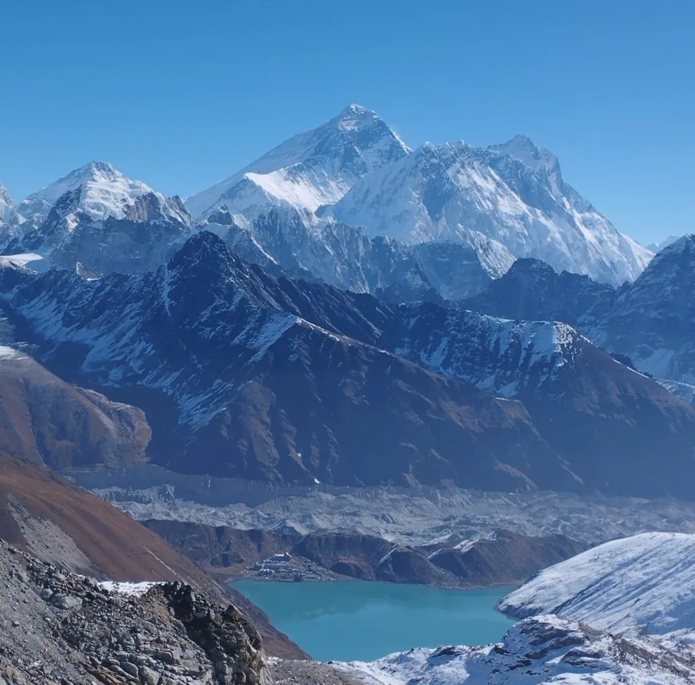
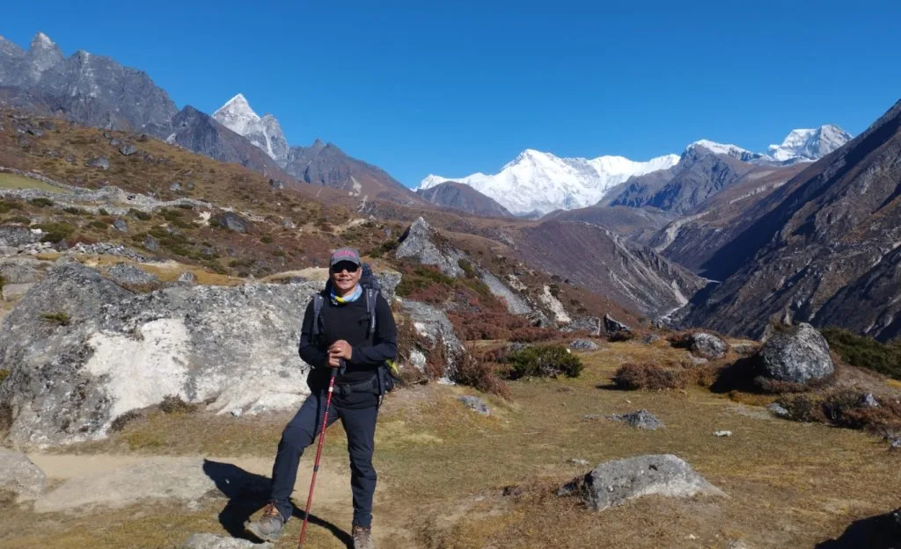
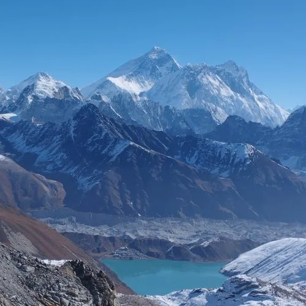

Our 14-day Gokyo Lakes Luxury Trek with Igloo Himalaya Treks was nothing short of perfection! Having five-star comfort in Kathmandu combined with upgraded lodges in Phakding and Namche made a massive difference to our recovery and energy. The sunrise from Gokyo Ri at 5,357m looking across Everest, Lhotse, Makalu, and Cho Oyu was breathtaking. Sagar Gurung and our Sherpa guides paced every day with incredible attentiveness!
Everest Region • Sacred Turquoise Lakes in
Comfort
5.0
reviews on TripAdvisor
5.0
214 reviews on Google
Gokyo Lakes Luxury Trek — 14 Days
Follow the Gokyo Valley to glacial lakes and the sunrise climb of Gokyo Ri on our fourteen-day Gokyo Lakes Luxury Trek. Five-star Kathmandu accommodation and upgraded stays in Phakding and Namche complement the mountain journey.

Travelers' Choice
Best of the Best 2026




Key Trip Facts
DURATION
14 Days
14
days, including sightseeing, trekking, acclimatisation, flights and departure
DIFFICULTY
Moderate to
Challenging
Moderate
to challenging, with high altitude, sustained climbs and consecutive walking days
MAXIMUM
ALTITUDE
5,357 m / 17,575
ft
Gokyo
Ri, approximately 5,357 m
DESTINATION
Nepal
Nepal
ACTIVITY
Trekking
Trekking
ACCOMMODATION
5-Star Hotel &
Mountain Lodges
Three
nights in a five-star Kathmandu hotel; ten mountain lodge or teahouse nights
TRANSPORT
Flights &
Private Vehicle
Return
Lukla flights, airport transfers and a private vehicle for Kathmandu sightseeing
MEALS
Breakfasts &
Trekking Meals
Kathmandu
hotel breakfasts; trekking meals according to your quotation
RECOMMENDED
SEASON
Spring &
Autumn
Spring
(March–May) and autumn (September–November)
TREK
STARTS
Lukla (2,860
m)
Lukla,
reached by domestic flight
TREK
ENDS
Lukla (2,860
m)
Lukla,
followed by return travel to Kathmandu
TREK
REGION
Everest /
Khumbu
Everest
/ Khumbu
PACKAGE
START POINT
Kathmandu
Kathmandu
PACKAGE
END POINT
Kathmandu
Kathmandu
Gokyo Lakes Luxury Trek Overview
Our Gokyo Lakes Luxury Trek combines the lake scenery of the upper Khumbu with upgraded stays on the lower route. You walk through Namche, Dole and Machhermo to Gokyo, then climb Gokyo Ri at around 5,357 m. Clear weather can reveal Everest, Lhotse, Makalu and Cho Oyu above the lakes and the nearby Ngozumpa Glacier.
The fourteen-day programme begins with arrival in Kathmandu and visits to selected UNESCO World Heritage sites by private vehicle. After flying to Lukla, you follow the Dudh Koshi valley through Phakding to Namche Bazaar. Suspension bridges, forest paths and village homes introduce the lower Khumbu. Two nights in Namche allow an acclimatisation hike with your guide before you turn towards the Gokyo Valley and its higher overnight stops.
From Namche, the route crosses hillside trails and forested slopes towards Dole. You continue through more open terrain to Machhermo, then approach Gokyo beside the lakes. The village stands around 4,790 m, making it the highest overnight stop. Two nights here give time for the Gokyo Ri sunrise hike and valley exploration as conditions allow.
Five-star accommodation in Kathmandu and upgraded lodges in Phakding and Namche distinguish the luxury arrangement. Dole, Machhermo and Gokyo use simpler mountain lodges or teahouses, where room facilities and meal choices vary. Confirm the named properties, rooming and trekking meal plan in your quotation. The higher route remains physically demanding, with cold nights, uneven ground and a steep viewpoint climb.
After Gokyo, you descend through Dole and Namche to Lukla. Return travel brings you to Kathmandu on Day 13, with an overnight stay before your Day 14 departure.
Gokyo Lakes Luxury Trek Highlights
Climb Gokyo Ri at approximately
5,357 m for sunrise, with views of Everest, Lhotse, Makalu and Cho Oyu when skies are
clear.
Stay beside Gokyo’s lakes, with
two nights for the viewpoint hike and time in the valley.
Enjoy upgraded stays in Phakding
and Namche, alongside five-star Kathmandu accommodation before and after the mountain
journey.
Spend an acclimatisation day in
Namche, taking a shorter hike before returning to sleep.
Follow the Dudh Koshi through
village trails, suspension bridges and forests on the approach to Namche.
Visit selected UNESCO World
Heritage sites in Kathmandu by private vehicle, adding a cultural day before the trekking journey
begins.
Why Book the Gokyo Lakes Luxury Trek with Igloo Himalaya Treks?
We help you prepare and arrange the journey through guiding, porter services, accommodation, equipment, permits and the scheduled travel connections.
Trek Briefing and Gear Check
Before leaving Kathmandu, we discuss the route, walking stages and essential equipment. Your briefing covers the Gokyo Ri hike, lodge facilities and practical preparations, with time to ask questions.
Guide and Porter Support
Your package includes a licensed trekking guide and porter services according to group requirements. The guide leads the route, while the porter carries agreed luggage. Confirm allocation and baggage allowance beforehand.
Equipment Provided for the Trek
We provide a sleeping bag, down jacket and duffel bag for use during the trek. Confirm their suitability and return arrangements at the gear check, and bring your own personal equipment.
Communication When Plans Change
Weather can affect Lukla flights, sightseeing and the trekking schedule. Our team discusses available options when plans change, including additional accommodation, meals or transport costs outside the services agreed in your quotation.
Day 1: Arrival in Kathmandu
Welcome to Nepal — 1,400 m (Kathmandu) — Hotel Check-in & Briefing
Welcome to Nepal. Our representative meets you at Tribhuvan International Airport and transfers you to your Kathmandu hotel. After checking in, we discuss the trekking route, equipment and preparations for your Gokyo Lakes journey through the Khumbu.
Depending on your arrival time, rest after your flight or explore nearby streets around Thamel. Organise your belongings and discuss any equipment, health or dietary requirements before tomorrow’s sightseeing and trek preparations.
Day 2: Kathmandu UNESCO Heritage Sightseeing by Private Vehicle
Cultural Sightseeing — 1,400 m (Kathmandu) — Heritage Monuments & Gear Check
Today you visit selected UNESCO World Heritage sites in Kathmandu by private vehicle. The day introduces the valley’s historic architecture and living religious traditions before you leave for the mountains.
The selected sites, visiting order, guide arrangements and entrance fees are confirmed in your quotation. Dress respectfully at religious places and ask before photographing people or ceremonies. After returning to the hotel, complete your gear check and organise your trekking luggage. We confirm the flight departure airport and transfer arrangements for tomorrow’s journey to Lukla.
Day 3: Fly to Lukla and Trek to Phakding
Scenic Mountain Flight & Trail Start — 2,610 m (Phakding) — 3–4 hrs walking
Your journey begins with a flight to Lukla at 2,860 m. Depending on airline operations and the season, departure may be from Kathmandu or Manthali Airport in Ramechhap.
After landing, meet your trekking team and begin walking towards Phakding. The trail passes village homes, prayer wheels and forested slopes, with downhill stretches and shorter climbs along the way. Sections follow the Dudh Koshi River, introducing you to the lower valley. Your upgraded lodge provides the first mountain overnight stay before tomorrow’s climb to Namche.
Day 4: Trek from Phakding to Namche Bazaar
Dudh Koshi Canyon & Forest Ascent — 3,440 m (Namche Bazaar) — 5–6 hrs walking
We follow the Dudh Koshi through villages and forest towards Namche Bazaar. Suspension bridges connect the valley trails, with permit checks along the approach to Sagarmatha National Park before the sustained final uphill climb.
The ascent to Namche takes more effort than yesterday’s walk, so maintain a steady pace and pause when needed. Houses, shops and lodges spread across the hillside. Check into your lodge, rest and prepare for another night here after tomorrow’s acclimatisation hike.
Day 5: Acclimatisation Day in Namche Bazaar
Acclimatisation Hike — 3,880 m (Everest View) / 3,440 m (Namche) — Rest & Local Culture
We stay another night in Namche and take a shorter hike above the town. The Everest View area is a usual option, with mountain visibility depending on the weather and cloud.
Your guide chooses the walk according to conditions and how you are feeling. Afterwards, return to Namche for rest and another night at the same altitude. The afternoon allows time for shops or a café. Tell your guide immediately about any symptoms before continuing towards the higher Gokyo Valley tomorrow.
Day 6: Trek from Namche Bazaar to Dole
Gokyo Valley Trail via Mong La — 4,000 m (Dole) — 5–6 hrs walking
Leaving Namche, we follow hillside trails through Kyangjuma towards Mong La on the Gokyo route. The trail descends to Phortse Tenga before climbing through shaded forest to Dole, with mountain views when the weather allows.
Pine and rhododendron forest give way to thinner vegetation as the trail gains height. Dole is a higher overnight stop with simpler mountain lodge facilities. Keep a measured pace, report any altitude symptoms and rest after arrival before the next stage towards Machhermo tomorrow.
Day 7: Trek from Dole to Machhermo
Alpine Valley & Ridge Walking — 4,470 m (Machhermo) — 4–5 hrs walking
The trail continues above Dole through more open terrain towards Machhermo. Low vegetation, grazing slopes and stone buildings replace much of the forest scenery. The route gains further sleeping altitude, so take your time throughout.
Machhermo provides an overnight stop before the final approach to Gokyo. After checking into the lodge, rest and organise warm layers for the colder evening. Discuss how you are feeling with your guide, especially after today’s further gain in altitude.
Day 8: Trek from Machhermo to Gokyo Lakes
Approach to Glacial Lakes — 4,790 m (Gokyo Village) — 4–5 hrs walking
Today we follow the upper valley towards the Gokyo Lakes. The route passes rocky ground and the glacial lake approach, with the Ngozumpa Glacier shaping the landscape. Mountain visibility varies as you make your way towards Gokyo village.
Your lodge stands beside the lakes at around 4,790 m, the highest overnight stop on this itinerary. Rest after arrival and prepare warm layers and a headlamp for tomorrow’s early hike. The Gokyo Ri climb depends on weather and health.
Day 9: Gokyo Ri Sunrise and Gokyo Valley Exploration
Gokyo Ri Summit Hike — 5,357 m (Gokyo Ri) / 4,790 m (Gokyo) — 4 Peaks Panorama
We start early for the climb to Gokyo Ri, carrying warm layers and a headlamp. The altitude makes the ascent demanding, so follow your guide’s pace and report symptoms.
At around 5,357 m, the viewpoint looks across the Gokyo Lakes and Ngozumpa Glacier. Clear weather can reveal Everest, Lhotse, Makalu and Cho Oyu. Cloud, wind or snow can change the outlook and the sunrise hike.
After descending to Gokyo, rest at the lodge. Valley exploration depends on conditions and your energy; additional lake visits are discussed with your guide before setting out.
Day 10: Trek from Gokyo to Dole
Descent Retracing the Valley — 4,000 m (Dole) — 5–7 hrs walking
The return journey begins as we leave Gokyo and retrace the valley trail towards Dole. Passing the lake approach and Machhermo, you gradually lose altitude, with changing views of the mountain slopes and familiar sections from the outward walking journey.
This stage includes uneven ground and downhill sections that require care. Keep water and weather protection accessible in your daypack. More vegetation returns as you lose altitude, before reaching Dole for another lodge night. Tomorrow, the trail continues back through forest towards Namche Bazaar.
Day 11: Trek from Dole to Namche Bazaar
Return to Lower Valley — 3,440 m (Namche Bazaar) — 5–6 hrs walking
We descend from Dole through forest towards Phortse Tenga, then climb towards Mong La. The return to Namche includes uphill sections as well as the overall loss of altitude.
Continue along the hillside towards Namche, where the lower-route lodge arrangement returns. After checking in, rest or visit the town’s shops and cafés if time allows. Check your belongings and discuss tomorrow’s longer walk to Lukla with your guide. Keep your essential items ready for the final trekking day ahead.
Day 12: Trek from Namche Bazaar to Lukla
Final Trail Day along Dudh Koshi — 2,860 m (Lukla) — 6–7 hrs walking
Your final trekking day retraces the trail from Namche towards Lukla. Descend through forest, cross the suspension bridges and continue through villages along the Dudh Koshi before the approach to Lukla.
Although the route finishes lower than Namche, the day includes climbs, uneven paths and hours of walking. Take care on tired legs and maintain a steady pace. At the lodge, organise your luggage for tomorrow’s flight, keeping travel documents accessible and confirming baggage arrangements with the trekking team before departure.
Day 13: Fly from Lukla and Return to Kathmandu
Mountain Flight to Capital — 1,400 m (Kathmandu) — 5-Star Hotel Celebration
Subject to weather and airline operations, we fly from Lukla and return to Kathmandu. Flights may land at Kathmandu or Manthali Airport, with a road journey from Manthali.
Once in Kathmandu, check into your hotel and prepare for tomorrow’s departure. Depending on arrival time, rest or explore streets. Keep flight details, valuables and travel documents accessible, and confirm the timing of your final airport transfer with us.
Day 14: Departure from Nepal
Final Farewell — 1,400 m (Kathmandu) — Airport Drop-off
Your fourteen-day Gokyo Lakes Luxury Trek ends today. After breakfast, prepare for your onward journey and check your belongings. Depending on your flight time, there may be an opportunity for a walk before leaving Kathmandu.
Our representative transfers you to Tribhuvan International Airport for your departure.
Gokyo Lakes Luxury Trek Dates & Availability
Group Departures
If you would like to trek with other travellers, ask us about upcoming group departures. We’ll confirm the available dates, spaces and price for your chosen departure.
Private Trek Dates
Prefer to travel with your own group? Send us your preferred arrival date and number of travellers. We’ll check the arrangements for a private trek.
What’s Included in the Gokyo Lakes Luxury Trek
What’s Included
Airport transfers: Pickup and
drop-off for your arrival and departure in Kathmandu.
Lukla flights: Domestic flights
in both directions. Confirm the departure airport, road transfers and baggage allowance in your
quotation.
Accommodation: Three five-star
Kathmandu hotel nights and ten mountain nights, with upgraded stays in Phakding and Namche. Named
properties and room arrangements are confirmed before departure.
Meals: Breakfast during
Kathmandu hotel stays and trekking meals according to your selected package. Your quotation sets
the meal plan, daily allowances and any additional meals agreed for the programme.
Guide and porter: A licensed
trekking guide and porter services according to your group requirements.
Permits and charges: Sagarmatha
National Park and Khumbu local entry fees, trekking paperwork, taxes and company service
charges.
Trekking equipment: A sleeping
bag, down jacket and duffel bag for use during the trek. Confirm suitability and return
arrangements beforehand.
Trek extras: A trekking map,
company hat and completion certificate are included.
Kathmandu sightseeing: Day 2
heritage visits by private vehicle, as quoted.
Staff support: Guide and porter
food, accommodation, insurance and basic first-aid support are included.
What’s Not Included in the Gokyo Lakes Luxury Trek
International flights and Nepal
visa: Airfare to and from Nepal and your visa fee.
Travel insurance: Purchase your
own policy covering high-altitude trekking, medical treatment and emergency evacuation in
Nepal.
Medical and evacuation costs:
Personal treatment, rescue transport and helicopter evacuation are outside the package
price.
Personal equipment: Boots,
clothing, poles, toiletries and personal items beyond the sleeping bag, jacket and duffel supplied
for trekking.
Extra food and drinks: Snacks,
alcoholic drinks, beverages and meals outside the allowances confirmed in your trekking and hotel
quotation.
Personal services: Hot showers,
Wi-Fi and charging where charged separately; laundry and telephone expenses.
Guide and porter tips: Voluntary
gratuities for your team.
Optional activities: Additional
visits or experiences outside your programme.
Additional services: Extra
accommodation, meals or transport caused by flight delays, itinerary changes, natural disasters or
circumstances outside the programme.
Altitude Profile of the Gokyo Lakes Luxury Trek
Your first trekking night is in Phakding, below Lukla. Sleeping elevations then rise through Namche, Dole and Machhermo to Gokyo, the highest overnight stop. The table separates these village stays from the higher Gokyo Ri viewpoint, which you visit before returning to the same lodge.
Higher Places You Visit
Day 3 — Lukla
Around 2,860
m
Followed by the walk to Phakding
for the night.
Day 5 —
Everest View
Around 3,880
m
If visited, before returning to
Namche for the night.
Days 8–9 —
Gokyo
Around 4,790
m
The highest overnight stop, with
two nights beside the lakes.
Day 9 — Gokyo
Ri
Approximately
5,357 m
The highest point before
descending back to Gokyo.
The repeated overnight stops in Namche and Gokyo have different purposes: acclimatisation in Namche, then the viewpoint hike and valley exploration from Gokyo’s lodge base.
Weather and Best Time for the Gokyo Lakes Luxury Trek
Spring, from March to May, and autumn, from September to November, are the preferred seasons for Gokyo Lakes trekking. Both offer opportunities for mountain views and favourable walking conditions, although cloud, cold mornings, wind and snowfall can still affect the higher valley and viewpoint.
How Weather Changes Along the Route
Walking around Phakding and Namche can feel warmer in sunshine. Conditions become colder as you continue towards Dole, Machhermo and Gokyo, particularly before sunrise, after sunset and in exposed winds.
Even during spring and autumn, upper-valley nights can fall below freezing. The Gokyo Ri climb starts early and follows exposed slopes where wind adds to the cold. Carry warm layers and weather protection, and adjust plans when conditions require.
Which Season Should You Choose?
Choose spring for warming days and flowering forest sections on the lower route. Choose autumn, particularly October or November, if mountain visibility is your priority. Winter and monsoon need additional preparation and flexibility around cold, snow, wet paths and flights.
Hiking Gear
Footwear, technical trekking
poles, daypack and trail protection
Clothing
Multi-layering system for lower
trail sunshine, cool evenings and summit sunrise
Sleeping Equipment
Sub-zero lodge warmth and
hygienic sleeping comfort
Toiletries & Hygiene
High UV solar protection, trail
hygiene and comprehensive blister kit
Electronics
Power storage for cold mountain
nights, illumination & photography
Documents & Personal Items
National park permits,
helicopter medical insurance & high-altitude cash
Sherpa Porter Luggage Allowance & Daypack Advice
We provide an 80L waterproof duffel bag for your main luggage carried by our local porters (maximum luggage allowance: 10–12 kg per trekker, returned after your trek). Please carry your daypack (5–7 kg) containing your daily drinking water, fleece mid-layer, waterproof jacket, camera, prescription medication, passport, and valuables.
0/10 read
Click topics below to explore essential briefings
1. Trek Difficulty and Fitness
The trek is moderate to challenging, with consecutive walking days on forest paths, hillside trails and rocky ground. The final ascent to Namche requires sustained effort, while Gokyo Ri involves a steep climb above 5,000 m. Upgraded accommodation provides comfort but does not reduce these demands.
Previous hiking experience is helpful. First-time trekkers should build endurance before departure and become comfortable walking uphill and downhill regularly with a daypack.
Prepare with regular walks and hill hikes before departure, allowing longer if you have limited walking experience. Include strength exercises, practise in your trekking boots and become comfortable descending uneven paths with a daypack before beginning the journey.
2. Altitude and Acclimatisation
The itinerary includes an acclimatisation day in Namche, followed by nights in Dole, Machhermo and Gokyo. Sleeping altitude rises after Namche; discuss your response to altitude with your guide.
Report headaches, nausea, dizziness or unusual fatigue. Do not continue to a higher sleeping altitude with symptoms of altitude illness. If symptoms worsen despite rest at the same elevation, descend. The Gokyo Ri hike may need to change; reaching the viewpoint remains secondary to your health.
3. Medical Conditions and Travel Insurance
If you have an existing medical condition, seek advice from a healthcare professional familiar with high-altitude travel before booking. Discuss your route, elevations and any medicines you take.
Travel insurance is strongly recommended and excluded from the price. Choose cover for the full route, including Gokyo Ri at approximately 5,357 m, medical treatment and evacuation. Check activity exclusions, altitude limits, excess charges and assistance procedures directly with your insurer before departure.
4. Accommodation and Room Facilities
You stay three nights in a five-star Kathmandu hotel and ten nights on the mountain route. Phakding and Namche use upgraded lodges, with simpler mountain teahouses in Dole, Machhermo and Gokyo.
Confirm the properties, rooming and bathroom arrangements in your quotation. Facilities vary between lodges, particularly higher up. Private bathrooms, heated bedrooms and hot showers are not established for every overnight stop. Bring warm layers for cold evenings.
5. Food and Dietary Requirements
Your quotation sets the trekking meal plan; Kathmandu breakfasts are included. Lodge menus commonly offer dal bhat, noodles, pasta, soups and bread.
Tell us about allergies or dietary requirements before booking so we can discuss what can be arranged along the route. Explain strict requirements clearly, including any concerns about shared cooking equipment.
6. Drinking Water
Carry reusable bottles and drink boiled or appropriately treated water. Water from lakes, streams or untreated taps can contain germs that cause illness.
Boiling is the most reliable way to kill germs. If boiling is unavailable, filtration followed by disinfection offers broader protection than many portable filters alone. Follow the instructions for your treatment equipment or tablets.
7. Guide and Porter Support
A licensed guide and porter services are included according to group requirements. Confirm allocation, baggage allowance and language arrangements before departure. Carry water, warm layers, medicines, valuables and daily essentials in your daypack.
8. Showers, Charging and Communication
Hot showers, Wi-Fi and charging cost extra where charged separately. Facilities vary between lodges, and mobile reception can be unreliable higher up. Carry a power bank and keep information available offline. Discuss the facilities at your selected properties and let family know contact may be limited.
9. Permits and Documents
We include Sagarmatha National Park and Khumbu local entry fees. Nepal Tourism Board requires a licensed guide and agency-issued TIMS card for Gokyo; confirm TIMS arrangements and fee coverage. Carry your passport, insurance and permit copies.
10. Travel Delays and Extra Time
Lukla flights depend on weather and airline operations. Seasonal departures may use Manthali Airport in Ramechhap, requiring road travel. Confirm airport and transfer arrangements.
Allow extra time before international departure. Additional accommodation, meals or alternative transport may cost extra if flights are delayed. Helicopter evacuation is separately charged.
AUTHENTIC
TRAVELER STORIES
Gokyo Lakes Luxury Trek Reviews & Experiences
Read genuine feedback from trekkers who experienced the turquoise waters of Gokyo Lakes, climbed Gokyo Ri for sunrise at 5,357 m, and enjoyed upgraded stays in Phakding and Namche with Igloo Himalaya Treks.

12 May

24 April

18 October

5 November


Gokyo Lakes Luxury Trek FAQs
Route & Lakes
Can I do this trek without previous trekking experience?
∨
Yes, with suitable fitness and preparation. Technical climbing skills are unnecessary, but walking days, high sleeping elevations and the Gokyo Ri ascent require effort. Practise hill walks with a daypack and discuss your experience before choosing this itinerary.
What is the highest altitude on this itinerary?
∨
Gokyo Ri is the highest point at approximately 5,357 metres. You hike there from Gokyo and return to the village afterwards. Gokyo, around 4,790 metres, is the highest overnight stop, with two nights beside the lakes.
Can I see Mount Everest from Gokyo Ri?
∨
Yes, in clear weather. Gokyo Ri can reveal Everest, Lhotse, Makalu and Cho Oyu, with lakes and the Ngozumpa Glacier below. Mountain visibility and access depend on cloud, wind, snow and conditions during the planned hike.
Do we stay beside the Gokyo Lakes?
∨
Yes. You spend two nights in a mountain lodge at Gokyo, beside the lakes. The second day includes the planned Gokyo Ri sunrise hike and valley exploration as conditions allow. The programme then descends towards Dole on Day 10.
Are upgraded lodges available throughout trekking?
∨
Upgraded stays apply to Phakding and Namche, alongside five-star Kathmandu accommodation. Dole, Machhermo and Gokyo have simpler mountain lodges or teahouses. Confirm properties, rooming and facilities in your quotation; altitude and lodge availability influence comfort.
Do I need to carry my main trekking bag?
∨
Porter services are included according to group requirements. Confirm allocation and luggage allowance before packing. You carry a daypack with water, warm layers, medicines, valuables and essentials needed while walking. Airline baggage limits need checking.
Do I need to bring a sleeping bag and down jacket?
∨
A sleeping bag, down jacket and duffel bag are supplied for use during the trek. Confirm their warmth, suitability and return arrangements at the gear check. Bring your own boots, clothing, toiletries, medicines and other personal equipment.
Is insurance covering trekking to 5,000 metres sufficient?
∨
No. Gokyo Ri reaches approximately 5,357 metres, above a 5,000-metre policy limit. Choose insurance covering the full planned route, trekking activity, medical treatment and emergency evacuation. Check altitude exclusions, excess charges and assistance procedures directly with your insurer.
Does being fit protect me from altitude sickness?
∨
No. Fitness helps with the walking effort but does not prevent altitude illness. Fit and experienced trekkers can also become unwell. Follow the acclimatisation plan, report symptoms and avoid further ascent when ill rather than relying on strength.
What should I do if I feel unwell at altitude?
∨
Tell your guide about headaches, nausea, dizziness or unusual fatigue. Do not ascend to a higher sleeping altitude with altitude illness. If symptoms worsen despite rest at the same elevation, descend. The viewpoint hike may need changing.
Can I book as a solo traveller?
∨
Yes. The package supports private arrangements, with dates, accommodation and services discussed for your booking. Send us your dates to request a quotation. Solo rates, room supplements and porter allocation require confirmation before you book.
How does this differ from the standard Gokyo trek?
∨
The luxury package includes five-star Kathmandu accommodation and upgraded lower-route lodges, plus Kathmandu heritage sightseeing by private vehicle. The mountain destination remains Gokyo Lakes and Gokyo Ri. Compare the duration, properties, meal allowances and quoted services before choosing your arrangement.
Book the Gokyo Lakes Luxury Trek
Send us your preferred travel dates, number of travellers and questions about Gokyo Lakes. We’ll confirm the fourteen-day programme, lodge selection, meal plan and price for your group. Tell us about your walking experience, fitness and altitude concerns so we can discuss the mountain stages and practical arrangements before you decide to book.
MORE ADVENTURES
You Might Also Like
If you prefer a shorter lake journey, another mountain destination or a high-pass route through the Khumbu, consider these packages.
 12 Days
12 Days
Gokyo Lakes Trek
Explore the Gokyo Valley on the standard teahouse itinerary, with a climb to Gokyo Ri for views in clear weather. Compare the shorter programme and accommodation arrangements if the route matters more than upgraded stays.
 14 Days
14 Days
Everest Base Camp Luxury Trek
Follow the Everest Base Camp route through Tengboche, Dingboche and Gorak Shep, with a Kala Patthar hike. This luxury package focuses on Base Camp, with quoted accommodation arrangements to compare before booking.
 14 Days
14 Days
Gokyo Lake Renjo La Pass Trek
Combine the Gokyo Lakes and Gokyo Ri with a Renjo La crossing, continuing through Lungden and Thame. This adds a high-pass stage and a different return valley, requiring careful preparation for the crossing and flexibility around mountain conditions.
 11 Days
11 Days
Gokyo Lake Trek with Helicopter Return
Walk to Gokyo Lakes and climb Gokyo Ri, then return to Lukla by helicopter before the onward flight connection. This replaces the return trekking section. Flights depend on weather and operating conditions; confirm the final travel arrangements.
Enquire about your preferred package for current prices and availability.